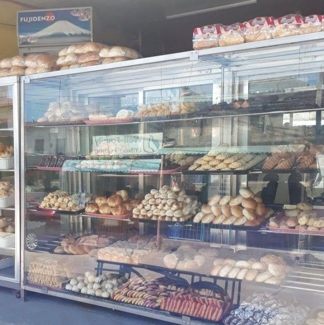
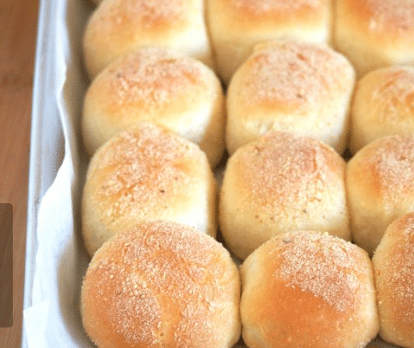
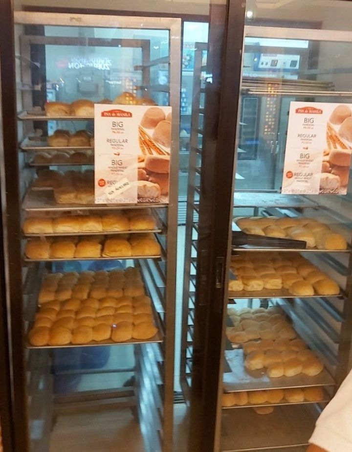
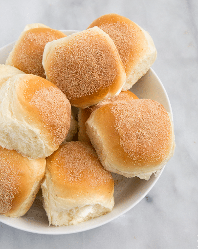

https://cafe.daum.net/dotax/Elgq/4795707?svc=cafeapi




Pan de sal
빤데살
개당 100~200원 하는데
필리핀 서민들 국민빵임
모닝빵 안에 시나몬설탕을 발라 구운게 특징
https://cafe.daum.net/dotax/Elgq/4795707?svc=cafeapi




Pan de sal
빤데살
개당 100~200원 하는데
필리핀 서민들 국민빵임
모닝빵 안에 시나몬설탕을 발라 구운게 특징
van der sar
어?
맨...
van der waals
빵 자체가 설탕 + 밀가루 + 기름의 혼합물인데 거기에 설탕을 더하니 당연히 맛있음
반데사르형님
당+탄수화물은 진리지
그런 당신에게 설탕밥을 드리겠습니다.
땡큐 썰~!
그래서 맛있는 3대 영양소가 당탄지임
소금빵이 더 맛있을 것 같은데
막 구워서 나올때 냄세가 좋고 맛은 흔히 아는 빵맛 근데 일단 가격자체가 우리나라 소금빵과는 상대가 안됨... 엄청 쌈...
탄수화물+기름+설탕.... 도넛하고 비슷하네
맛있겠네
sal인데 설탕빵이야?
시나몬설탕 치트키급이긴하지 ㅋㅋ
어느 나라나 거진 다 있는데 형태가 좀 다른...
난 사타안다기 맛있더라
혈당스파이크 장난 아니겠다 ㅋㅋㅋㅋㅋ
크림빵이나 팥빵, 호떡, 꽈베기, 도넛 같은거랑 비슷하지 않을까
빵에 원래 설탕이얼마나많이들어가는데 ㅋㅋ
몇일전에도 먹고왔는데
겉에 뭐 바른건 변종일듯
그냥 순수빵맛임
오토바이에 달린 화덕에서 바로 구워팔아서 맛있을뿐
모닝빵에 잼버터 발라먹는거랑 다를게 없네
호떡이잖아
어우 필리핀 씨발 개쌔끼들 밤마다 짖어대고
개보다 닭이 더 싫었음
ㅅㅂ 네다섯시부터 울어 ㅋㅋㅋㅋㅋ
12시넘으면 개쌔끼들이 짖고
해뜨기전엔 닭들이 괴성지르고
눈뜨면 머리맡에 도마뱀 까꿍
그냥 저렴해서 먹는거 아니냐
필리핀에 현지인 아는 사람 있었는데 그 과일 많이 나는 나라에서 오렌지향 주스 먹더라고
한국에선 500-1000원 하려나
반데사르?
소금빵보다 맛있는 설렁탕 ㅇㄷ
필리핀 이곳저곳서 저거먹었는데
코론에 항구에 원탑있음.
원래 필리핀 밀은 싸구려인데
근데도 기억나는 맛
맨유의 레전드 골키퍼
Pan de sar
단수화물 쩐다
에드윈 성님 그립습니다
국내 오면 얼마로 뻥튀기 될까
키퍼 잘 할 거 같네
집에서 후라이팬에 버터 두르고 식빵 구워서 설탕 뿌려가지고 우유랑 먹으면 극락인데 그런 느낌인가
놀랍게도 소금빵 만들때 설탕 조낸들어간다..
베이글도 설탕 조낸들어가
그냥 모닝빵에 계피사과잼바르면 될거같은데
저거 존나 맛있음.. 예전에 홈스테이 집이 필리핀인이 셨는데 항상 식탁 위에 있었음
저거 말고도 아도보라고 장조림 비슷한 음식도 맛있었고
맛있겠다.
요새 모닝빵사서 꿀발라먹는데
우리회사 외국인들 다 필리핀인데 물어봐야겠다 맛있냐고 ㅋㅋ
설렁탕 어디갔냐…
시나몬 설탕 들어간빵? 호떡맛 ㅇㅈ
구운호떡이네